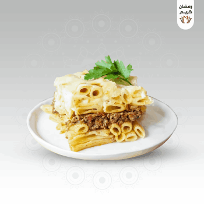

Pastitsio Recipe
Description
The dish that keeps pretending it's a Greek classic, but let's be honest, it's basically lasagna's cousin that never quite lived up to the family reunion hype. Layers of pasta, ground beef, and béchamel sauce baked together to create a dish that people talk about like it's some divine culinary gift. Spoiler alert: it's not.
This hearty casserole is the go-to for anyone who wants to impress their guests with the illusion of sophistication — even though it's just pasta with a fancy name. Sure, the rich béchamel is nice, but is it really worth all the attention it gets? Or are we just filling the void of better options?
Ingredients
- 680g dried pasta (because of course, you can't cook without pasta)
- 1 tablespoon olive oil (use this like it's liquid gold, but it's just oil)
- For the Meat Sauce
- 900g ground beef (because red meat makes you feel fancy, but let's be honest — it's all about the sauce anyway)
- 1 cup tomato sauce (yeah, you could've made it from scratch... but this'll do)
- 1 medium onion, chopped (the one thing that actually makes your kitchen smell like you care)
- ¼ cup chopped parsley (look at you, adding a sprinkle of green like you know what you're doing)
- 1 tablespoon olive oil (for the Mediterranean vibe you pretend to have)
- 1 teaspoon salt (because you're not even measuring it, just toss it in like a pro)
- 2 cloves garlic, minced (the magic ingredient that somehow makes everything better)
- For the Bechamel Sauce
- 2 cups milk (the kind that's been in the fridge a bit too long, but you're pushing through)
- 1 cup shredded mozzarella cheese (because who needs authentic cheese when you've got this?)
- ½ cup flour (the flour that's been sitting in your pantry since 2012, but it'll be fine)
- ½ cup chicken broth (because you needed an extra something in the sauce to pretend it's gourmet)
- 4 tablespoons unsalted butter (throw in more than you should, it's butter, what's the worst that could happen?)
- 1 egg (because at least it's protein, right?)
- 1 teaspoon salt (you didn't measure this, did you?)
- ¼ teaspoon nutmeg (throw it in, because apparently it's a "secret ingredient" — but is it really?)
Steps
- How to Boil the Pasta:
- Preheat your oven to 205°C (400°F) (because we all know the oven is the magic box that makes everything better, even if it's just for pasta).
- Grease a deep baking dish with a little olive oil (you can just use a random dish, don't overthink it, no one's going to notice).
- Bring an appropriate amount of water to a boil in a deep pot, and add some salt (obviously, the salt is important, but you know you're just throwing it in there).
- Add the pasta, give it a quick stir, and let it cook until it's soft enough for your taste (really, just wait until you can't tell the difference between "al dente" and "overcooked").
- Drain the pasta, then toss it with a tablespoon of olive oil (so it doesn't stick together and looks like you actually care about presentation).
- How to Make the Meat:
- Place a large pan or pot over medium heat (yes, medium heat — unless you like the risk of burning it).
- Add olive oil and chopped onion, and cook it until the onion gets that nice, translucent look (side note: don't cry over onions, you're just making pasta).
- Toss in the garlic, stir it for about a minute, then add the ground beef (feel free to pretend you're a professional chef while you stir it).
- Keep stirring until the meat crumbles and turns a nice, brownish color (or until you lose patience, either works).
- Add salt and tomato sauce, then stir it for a bit until the liquid evaporates completely (and by "evaporate," I mean mostly evaporates. It's pasta sauce, not science).
- Take the meat off the heat, then add the chopped parsley and give it a good stir (you know, to make it look like you put in more effort than you actually did).
- How to Make the Bechamel Sauce:
- Grab a large pot, melt the butter over medium heat (because butter makes everything feel like a restaurant dish. Don't mess this up).
- Add the flour and stir until it turns a golden color (you don't want it burnt, but who's counting?).
- Add the salt and nutmeg, then slowly pour in the milk while whisking like you've got your life together (just pretend you're in one of those fancy cooking shows where everything's smooth and effortless).
- Gradually pour in the chicken broth while continuing to whisk. Keep going until the mixture thickens to a "creamy" consistency (yes, thickening is the goal, but again, don't sweat the details too much).
- Crank up the heat, then add the mozzarella cheese. Stir until it's all mixed in (at this point, you're basically making cheese sauce. Don't lie, you're excited).
- In a small bowl, beat the egg well, then pour it into the sauce (make sure you don't scramble the egg in the process — that's a mess).
- Whisk everything together until the béchamel is smooth and creamy (and no, it's not as hard as it looks. Just don't burn it).
- How to Assemble the Pastitsio:
- Layer half of the pasta in the baking dish and spread it evenly (you've got to make it look like you put some thought into this).
- Spread the meat mixture evenly on top of the pasta (don't act like this isn't the best part).
- Add the remaining pasta on top of the meat mixture (you're building layers of mediocre glory here).
- Pour the entire béchamel sauce over the pasta and spread it evenly (go ahead, pour it like you're an artist finishing their masterpiece. Pretend you care).
- Bake it in the oven for 30–40 minutes until it's golden and bubbly (or just bake it until you're hungry enough to stop checking every 5 minutes).
- Take it out and let it cool for 15 minutes (that's right, patience is required. Don't cut it while it's still bubbling like lava).
- Slice it and serve warm (Pastitsio — it's fine. It'll fill you up. That's basically its job).